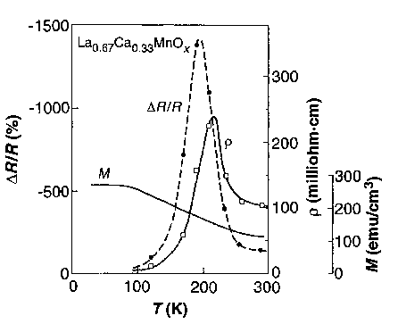

|
 |
The earliest account of magneto-resistance (MR) data was reported by Volger in as early as 1954 [87]. The observed decrease of resistivity in magnetic fields in the ferromagnetic phase was puzzling, but the true size of this effect was not appreciated. About 45 years later, notably large MR effects were found in Nd0.5Pb0.5MnO3 bulk samples [88] (Kusters et al. , 1989) and La2/3Ba1/3MnO3 thin films [89] (von Helmolt et al. , 1993). Similar observations were also published by Chahara et al. [90] and Ju et al. [91]. However, the name ``colossal'' was not coined till the truly colossal MR ratios reported by Jin et al. [92] in 1994 on films of La2/3Ca1/3MnO3.
|
 |
The enormous magnitude of the MR found in manganites should be distinguished from the previously discovered giant magneto-resistance (GMR). GMR materials are multi-layer metallic films showing a relatively large sensitivity to magnetic fields. The mechanism in these films is largely due to what is known as the spin-valve effect between spin polarized metals. If an electron in a regular metal is forced to move across a spin-polarized metallic layer (or between spin-polarized layers) it will suffer spin-dependent scattering. If the electron was initially polarized parallel to that of the layer the scattering rate is relatively low; if initially polarized anti-parallel to that of the layer the scattering is high. The effect of an external field is to increase the ratio of the former events to the latter by aligning the polarization of the magnetic-layer along the direction of the external field. This effect has the very important advantage of not being limited to low temperatures. Another important difference from CMR is that usually only several tenths of a Tesla magnetic field is necessary, while the CMR materials may require a field of over 5 T.
The CMR effect in manganites can be thought of as a magnetic field driven insulator to metal (IM) transition. This has great similarity to the temperature driven IM transition concomitant with the PM to FM magnetic phase transition. Qualitatively, the observed CMR effect can be explained within the context of theory of double exchange. The external magnetic field will drive the material from PM to FM phase when sufficiently large. This would induce the insulator to metal transition. However, the enormous size of the CMR effect cannot be explained quantitatively by double exchange only [94]. Significant theoretical developments over the past decade have greatly improved our understanding of the physics of manganites.